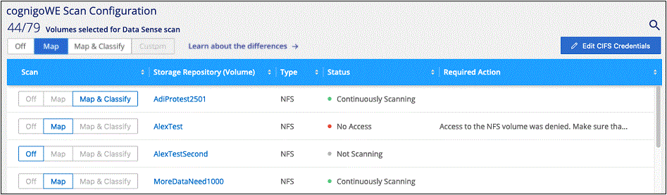
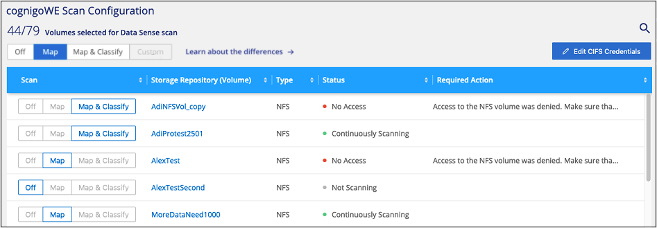
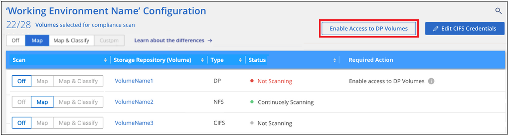

문서 변경 요청
문서 변경 요청 이 페이지 편집
이 페이지 편집 기여하는 방법 자세히 알아보기
기여하는 방법 자세히 알아보기Cloud Volumes ONTAP 및 사내 ONTAP에 대한 클라우드 데이터 센스를 시작하십시오
클라우드 데이터 센스를 사용하여 Cloud Volumes ONTAP 및 온프레미스 ONTAP 볼륨을 스캔하려면 몇 단계를 완료하십시오.
빠른 시작
다음 단계를 따라 빠르게 시작하거나 나머지 섹션을 아래로 스크롤하여 자세한 내용을 확인하십시오.
볼륨을 스캔하려면 먼저 Cloud Manager에서 시스템을 작업 환경으로 추가해야 합니다.
-
Cloud Volumes ONTAP 시스템의 경우, 이러한 작업 환경을 Cloud Manager에서 이미 사용할 수 있어야 합니다
-
사내 ONTAP 시스템의 경우, "Cloud Manager가 ONTAP 클러스터를 검색해야 합니다"
"클라우드 데이터 센스를 구축하십시오" 이미 배포된 인스턴스가 없는 경우
데이터 감지 * 를 클릭하고 * 구성 * 탭을 선택한 다음 특정 작업 환경의 볼륨에 대한 규정 준수 스캔을 활성화합니다.
이제 Cloud Data Sense가 활성화되었으므로 모든 볼륨에 액세스할 수 있는지 확인하십시오.
-
클라우드 데이터 감지 인스턴스에는 각 Cloud Volumes ONTAP 서브넷 또는 온프레미스 ONTAP 시스템에 대한 네트워크 연결이 필요합니다.
-
Cloud Volumes ONTAP의 보안 그룹은 데이터 감지 인스턴스의 인바운드 연결을 허용해야 합니다.
-
다음 포트가 Data Sense 인스턴스에 열려 있는지 확인합니다.
-
NFS – 포트 111 및 2049의 경우
-
CIFS – 포트 139 및 445의 경우
-
-
NFS 볼륨 엑스포트 정책은 데이터 감지 인스턴스에서 액세스할 수 있어야 합니다.
-
CIFS 볼륨을 검색하려면 Data Sense에 Active Directory 자격 증명이 필요합니다.
Compliance * > * Configuration * > * Edit CIFS Credentials * 를 클릭하고 자격 증명을 입력합니다.
스캔할 볼륨을 선택하거나 선택 취소하면 Cloud Data Sense에서 스캔을 시작하거나 중지합니다.
스캔할 데이터 소스 검색
스캔할 데이터 원본이 Cloud Manager 환경에 없으면 현재 캔버스에 추가할 수 있습니다.
Cloud Volumes ONTAP 시스템은 클라우드 관리자의 Canvas에서 이미 사용 가능해야 합니다. 사내 ONTAP 시스템의 경우 가 있어야 합니다 "Cloud Manager가 이러한 클러스터를 검색합니다".
Cloud Data Sense 인스턴스 구축
이미 구축된 인스턴스가 없으면 Cloud Data Sense를 구축하십시오.
인터넷을 통해 액세스할 수 있는 Cloud Volumes ONTAP 및 온-프레미스 ONTAP 시스템을 스캔하는 경우 다음을 수행할 수 있습니다 "클라우드 데이터 센스를 클라우드에 배포합니다" 또는 "인터넷 액세스가 가능한 사내 위치".
인터넷에 액세스할 수 없는 어두운 사이트에 설치된 온-프레미스 ONTAP 시스템을 스캔하는 경우 다음을 수행해야 합니다 "인터넷에 액세스할 수 없는 동일한 사내 위치에 클라우드 데이터 센스를 배포합니다". 또한 Cloud Manager Connector를 동일한 사내 위치에 구축해야 합니다.
데이터 감지 소프트웨어로 업그레이드하는 것은 인스턴스에 인터넷 연결이 있는 한 자동으로 수행됩니다.
작업 환경에서 클라우드 데이터 센스를 활성화합니다
지원되는 모든 클라우드 공급자와 온프레미스 ONTAP 클러스터에서 Cloud Volumes ONTAP 시스템에서 클라우드 데이터 센스를 활성화할 수 있습니다.
-
Cloud Manager의 왼쪽 탐색 메뉴에서 * 데이터 감지 * 를 클릭한 다음 * 구성 * 탭을 선택합니다.

-
각 작업 환경의 볼륨을 스캔할 방법을 선택합니다. "매핑 및 분류 스캔에 대해 알아봅니다":
-
모든 볼륨을 매핑하려면 * Map All Volumes * 를 클릭합니다.
-
모든 볼륨을 매핑하고 분류하려면 * 모든 볼륨 매핑 및 분류 * 를 클릭합니다.
-
각 볼륨에 대한 스캔을 사용자 정의하려면 * 를 클릭하거나 각 볼륨에 대한 스캐닝 유형을 선택한 다음 매핑 및/또는 분류할 볼륨을 선택합니다.
을 참조하십시오 볼륨에서 규정 준수 검사 활성화 및 비활성화 를 참조하십시오.
-
-
확인 대화 상자에서 * Approve * (승인 *)를 클릭하여 데이터 센스에서 체적 스캔을 시작하도록 합니다.
Cloud Data Sense는 작업 환경에서 선택한 볼륨을 스캔하기 시작합니다. Cloud Data Sense에서 초기 스캔을 마치면 Compliance 대시보드에서 결과를 얻을 수 있습니다. 소요되는 시간은 데이터 양에 따라 다릅니다. 몇 분 또는 몇 시간이 걸릴 수도 있습니다.
Cloud Data Sense가 볼륨에 액세스할 수 있는지 확인
네트워킹, 보안 그룹 및 엑스포트 정책을 확인하여 Cloud Data Sense가 볼륨에 액세스할 수 있는지 확인하십시오. CIFS 볼륨에 액세스할 수 있도록 CIFS 자격 증명을 사용하여 데이터 센스를 제공해야 합니다.
-
클라우드 데이터 감지 인스턴스와 Cloud Volumes ONTAP 또는 온프레미스 ONTAP 클러스터용 볼륨이 포함된 각 네트워크 사이에 네트워크 연결이 있는지 확인하십시오.
-
Cloud Volumes ONTAP용 보안 그룹이 데이터 감지 인스턴스의 인바운드 트래픽을 허용하는지 확인합니다.
Data Sense 인스턴스의 IP 주소에서 오는 트래픽에 대한 보안 그룹을 열거나 가상 네트워크 내부의 모든 트래픽에 대한 보안 그룹을 열 수 있습니다.
-
데이터 감지 인스턴스에 대해 다음 포트가 열려 있는지 확인합니다.
-
NFS – 포트 111 및 2049의 경우
-
CIFS – 포트 139 및 445의 경우
-
-
NFS 볼륨 내보내기 정책에 각 볼륨의 데이터에 액세스할 수 있도록 Data Sense 인스턴스의 IP 주소가 포함되어 있는지 확인합니다.
-
CIFS를 사용하는 경우 CIFS 볼륨을 스캔할 수 있도록 Active Directory 자격 증명을 사용하여 데이터 센스를 제공합니다.
-
Cloud Manager 상단에서 * 데이터 감지 * 를 클릭합니다.
-
Configuration * 탭을 클릭합니다.

-
각 작업 환경에서 * CIFS 자격 증명 편집 * 을 클릭하고 Data Sense가 시스템의 CIFS 볼륨을 액세스하는 데 필요한 사용자 이름과 암호를 입력합니다.
자격 증명은 읽기 전용일 수 있지만 관리자 자격 증명을 제공하면 Data Sense에서 상승된 사용 권한이 필요한 모든 데이터를 읽을 수 있습니다. 자격 증명은 Cloud Data Sense 인스턴스에 저장됩니다.
자격 증명을 입력한 후 모든 CIFS 볼륨이 성공적으로 인증되었다는 메시지가 표시됩니다.

-
-
Configuration_ 페이지에서 * View Details * 를 클릭하여 각 CIFS 및 NFS 볼륨의 상태를 검토하고 오류를 수정합니다.
예를 들어, 다음 이미지에는 4개의 볼륨이 나와 있습니다. 이 중 하나는 Data Sense 인스턴스와 볼륨 간의 네트워크 연결 문제로 인해 Cloud Data Sense가 스캔할 수 없는 볼륨입니다.

볼륨에서 규정 준수 검사 활성화 및 비활성화
구성 페이지에서 언제든지 작업 환경에서 매핑 전용 스캔 또는 매핑 및 분류 스캔을 시작하거나 중지할 수 있습니다. 매핑 전용 스캔에서 매핑 및 분류 스캔으로, 또는 그 반대로 변경할 수도 있습니다. 모든 볼륨을 검사하는 것이 좋습니다.

| 대상: | 방법은 다음과 같습니다. |
|---|---|
볼륨에서 매핑 전용 스캔을 활성화합니다 |
볼륨 영역에서 * Map * 을 클릭합니다 |
볼륨에서 전체 스캔을 활성화합니다 |
볼륨 영역에서 * Map & Classify * 를 클릭합니다 |
볼륨에서 스캔을 비활성화합니다 |
볼륨 영역에서 * Off * 를 클릭합니다 |
모든 볼륨에서 매핑 전용 스캔을 활성화합니다 |
제목 영역에서 * Map * 을 클릭합니다 |
모든 볼륨에서 전체 스캔을 활성화합니다 |
제목 영역에서 * 지도 및 분류 * 를 클릭합니다 |
모든 볼륨에서 스캔을 비활성화합니다 |
제목 영역에서 * Off * 를 클릭합니다 |

|
작업 환경에 추가된 새 볼륨은 머리글 영역에서 * Map * 또는 * Map & Classify * 설정을 설정한 경우에만 자동으로 스캔됩니다. 제목 영역에서 * 사용자 정의 * 또는 * 끄기 * 로 설정하면 작업 환경에 추가한 새 볼륨마다 매핑 및/또는 전체 스캔을 활성화해야 합니다. |
데이터 보호 볼륨을 검색하는 중입니다
기본적으로 데이터 보호(DP) 볼륨은 외부에서 노출되지 않고 Cloud Data Sense에서 액세스할 수 없기 때문에 스캔되지 않습니다. 이는 사내 ONTAP 시스템 또는 Cloud Volumes ONTAP 시스템에서 SnapMirror 작업을 위한 타겟 볼륨입니다.
처음에 볼륨 목록은 이러한 볼륨을 Type* DP*로 식별하며 Status* Not Scanning* 및 Required Action* DP 볼륨에 대한 액세스 사용*.

이러한 데이터 보호 볼륨을 스캔하려는 경우:
-
페이지 맨 위에서 * DP 볼륨에 대한 액세스 활성화 * 를 클릭합니다.
-
확인 메시지를 검토하고 * DP 볼륨에 대한 액세스 활성화 * 를 다시 클릭합니다.
-
소스 ONTAP 시스템에서 처음에 NFS 볼륨으로 생성된 볼륨이 설정됩니다.
-
소스 ONTAP 시스템에서 CIFS 볼륨으로 처음 생성된 볼륨을 사용하려면 CIFS 자격 증명을 입력하여 해당 DP 볼륨을 스캔해야 합니다. Cloud Data Sense가 CIFS 볼륨을 스캔할 수 있도록 Active Directory 자격 증명을 이미 입력한 경우 해당 자격 증명을 사용하거나 다른 관리자 자격 증명 세트를 지정할 수 있습니다.
-
-
스캔할 각 DP 볼륨을 활성화합니다 다른 볼륨을 활성화해도 마찬가지입니다.
활성화되면 Cloud Data Sense는 스캔을 위해 활성화된 각 DP 볼륨에서 NFS 공유를 생성합니다. 공유 내보내기 정책은 데이터 감지 인스턴스에서만 액세스를 허용합니다.
-
참고: * 처음에 DP 볼륨에 대한 액세스를 설정한 후 나중에 추가할 때 CIFS 데이터 보호 볼륨이 없는 경우 구성 페이지 맨 위에 * CIFS DP에 대한 액세스 활성화 * 버튼이 나타납니다. 이 버튼을 클릭하고 CIFS 자격 증명을 추가하여 이러한 CIFS DP 볼륨에 대한 액세스를 설정합니다.
|
|
Active Directory 자격 증명은 첫 번째 CIFS DP 볼륨의 스토리지 VM에만 등록되므로 해당 SVM의 모든 DP 볼륨이 검사됩니다. 다른 SVM에 상주하는 볼륨에 Active Directory 자격 증명이 등록되지 않으므로 DP 볼륨이 검색되지 않습니다. |